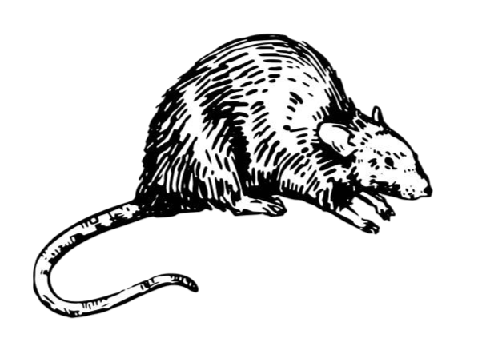

História
Durante meses, diversos casos de desaparecimento vêm sendo arquivados sem explicações ou investigações adequadas. Para a maioria, são apenas ocorrências sem solução. Mas um policial começa a perceber um padrão estranho por trás desses casos e suspeita que algo muito maior esteja acontecendo.
Decidido a descobrir a verdade, ele inicia uma investigação por conta própria. Suas pistas o levam até um antigo laboratório, onde encontra evidências de experimentos clandestinos conduzidos por um cientista que invadiu as instalações.
Utilizando ratos como cobaias, o pesquisador desenvolveu experimentos capazes de transformá-los em verdadeiras bombas vivas. Após avanços significativos, decidiu expandir suas pesquisas para seres humanos.
O que o policial ainda não sabe é que os desaparecimentos fazem parte de uma operação cuidadosamente planejada. Policiais infiltrados na própria corporação são responsáveis por sequestrar as vítimas e garantir que seus casos sejam arquivados, protegendo os experimentos de qualquer investigação.
Agora, quanto mais próximo chega da verdade, mais perigosa se torna sua investigação.
